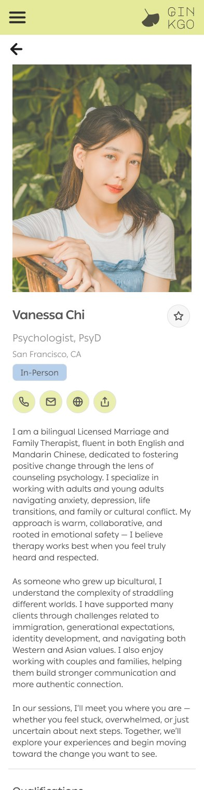

Ginkgo is a mobile app that helps Asian Americans find therapists who actually get them. It pairs a culturally-aware therapist directory with a "find your match" quiz that recommends providers based on language, cultural values, and therapy style — so instead of scrolling an overwhelming list and hoping, you get pointed somewhere that fits. I designed the whole thing solo, from research and personas all the way to a high-fidelity, clickable Figma prototype.

Context
TakeawayThe hard part isn't finding a therapist. It's whether the first session feels survivable enough that you come back for a second.
Finding a therapist is hard for anyone. Finding one who understands your cultural context — not just your symptoms — is a lot harder if you're Asian American. There's stigma, language barriers, a shortage of culturally competent providers, and honestly, not a lot of awareness that better options even exist. So a lot of people just… don't go.
The data made that painfully concrete. Asian Americans are about 6% of the U.S. population, but in 2022 they were only 1.4% of kids and 1.7% of adults who actually received mental health treatment. Only 4.37% of U.S. psychologists identify as Asian — a tiny pool of people likely to understand values like filial piety, emotional restraint, or collectivism without needing them explained first. And around 72.5% of Asian Americans speak a language other than English at home, which matters a lot in something as vulnerable as therapy.
What the numbers don't show is where people fall out, and that turned out to be the more useful question.
Stigma here lives in the family, not the neighborhood. Research on utilization data from 2012–2016 found that standard survey questions about stigma — do you worry what neighbors think, do you worry people will find out — mostly miss what's actually happening in Asian communities, where shame is located inside the family and tied to "saving face." That's a design problem, not just a cultural fact. It means the reassurance people need isn't a "100% confidential" badge. It's knowing exactly who can see what, and whether anything shows up on a shared insurance statement.
A lot of people arrive through the body, not the mind. Asking a doctor about insomnia, headaches, or a racing heart carries none of the shame of admitting to anxiety or depression — so that's often the door people use. An app that opens with "diagnose your mental illness" is closed to them before it starts.
And the real failure point is session two. In Sue's foundational Seattle study, roughly half of ethnic minority clients terminated after a single session, against a 30% dropout rate for white clients. Zane's outcome research found the same pattern for Asian American clients specifically: higher premature termination, shorter stays, worse short-term outcomes. Underutilization is the headline, but attrition is where care is actually lost.
That reframed the whole brief for me. A matching product that optimizes for "matched" is optimizing for the wrong moment.
The challenge I set for myself: make it genuinely easier to find a therapist who fits — and define "fits" as still going at session three, not booked once.
My role
TakeawaySolo capstone, full human-centered process — research through hi-fi prototype, including the ethical risk work.
Solo capstone, so… all of it. I owned the full human-centered process: research and data synthesis, the competitive audit, personas and journey maps, the ethical risk work, and prototyping from scrappy wireframes to a polished interactive prototype.
Competitive audit
TakeawayEveryone's search experience is fine. Nobody gives you a way to say what you actually need — and not one of the four exists in a language other than English.
I audited four platforms already in the space: Psychology Today, the Asian Mental Health Collective (AMHC) directory, Anise Health, and Mental Health Match. I expected to find usability problems. I didn't — three of the four rated outstanding on navigation, hierarchy, and site structure. These are competent products.
The gap was somewhere else entirely.
| Platform | How you find someone | Cultural specificity | Languages | Cost to try | Where it breaks down |
|---|---|---|---|---|---|
| Psychology Today | Filtered directory | Basic "speaks X" tag; no values or lived-experience dimension | English only | Free | Enormous inventory, no way to narrow on the thing that actually matters — you're scrolling and guessing |
| AMHC directory | Browse-only database | Strongest community framing of the four; explicitly for Asian communities | English only | Free | No matching function at all, and the filtering is clunky. The primary CTA even renders in what reads as a "clicked" state, so people hesitate on the one button that matters |
| Anise Health | Intake → matched provider | Deepest cultural training model in the market; the closest thing to a real competitor | English only (multilingual providers case-by-case) | $$$, account required before you see any match | Asks for commitment before it shows value — a hard sell for someone whose whole barrier is ambivalence |
| Mental Health Match | Preference quiz → ranked matches | Generic; no cultural dimension | English only | Free, no forced signup | Best matching mechanic of the four. Caps the number of top matches to prevent choice overload — a pattern I borrowed outright |
Two findings drove everything after.
One: cultural fit isn't a filterable concept anywhere. You can filter for a therapist who speaks Vietnamese. You cannot filter for one who understands why you can't tell your mother you're in therapy. The distinction sounds small and is the entire problem.
Two: all four are English-only. The directory built specifically for Asian communities is English-only. So is the venture-backed culturally-responsive startup. For a population where 72.5% speak another language at home, that's not an accessibility oversight — it's the market gap, sitting in plain sight.
That's the reason Ginkgo should exist, and it's why the multilingual toggle isn't a nice-to-have in this product. It's the product.
Process
Digging into the research. I pulled together data from national health databases, workforce registries, and census estimates (I leaned on 5-year ACS estimates for the smaller population segments, since they're more reliable) so the whole thing was grounded in evidence and not just my assumptions. Three priorities fell out of it and drove every decision after:
- Accessibility & language matching — you should be able to filter by language fluency and cultural background, with multilingual support baked in.
- Trust & cultural relevance — the app should make therapy feel normal within Asian cultural frameworks, instead of translating a western-default clinical tone.
- Simplicity for multilingual audiences — plain language and visual cues so people don't drop off, especially ESL and older users.
The people I was designing for
TakeawayThree personas across three different entry points into care, because "Asian American" isn't one user and designing for the average of them serves none of them.
I built three research-grounded personas so I wasn't secretly designing for one imaginary version of "an Asian American user": Emily, a 23-year-old burnt-out achiever navigating high-achieving-immigrant-family stuff; Kevin, 28, trying to find a therapist who can actually talk to his immigrant mom in her language; and Arjun, a 15-year-old therapy skeptic who needs a way in that doesn't feel cold or clinical. Empathy maps and journey maps followed each of them from "maybe I need help" to "matched," flagging every spot it got emotionally or practically hard.


Building it
TakeawayTwo flows — browse when you know what you want, quiz when you don't. Most people don't.
I moved from sketches to low-fi wireframes to a branded high-fidelity prototype in Figma, built around two main flows:
- Explore therapists — a directory with real cultural filters (language, values, therapy style, session type, price) and profiles that lead with cultural strengths.
- Find your match — a short quiz that turns the overwhelming open search into a few questions and hands back therapists that fit.
I went with a ginkgo leaf, a soft sage palette, and copy like "your space to begin" on purpose — I wanted it to feel calm and welcoming, not like filling out a medical form.

The two flows I built out:


How the matching actually works
TakeawayIdentity match is what gets people in the door. Cultural attunement is what makes them stay. Ginkgo does both — and never lets one stand in for the other.
Here's the honest version: I designed the interface for "find your match" — the questions, the pacing, the tone — but I never specified the logic underneath it. The quiz took answers and returned therapists, and how it got from one to the other was hand-waved. Coming back to it, that's the most interesting problem in the project, so I worked it out properly.
The tension I ran into
The research on identity matching says two things that don't obviously agree. Cabral and Smith's 2011 meta-analysis found a moderately strong preference for a therapist of one's own race or ethnicity — d = 0.63 across 52 studies — and a tendency to perceive same-race therapists more positively. But the same analysis found that racial matching didn't improve treatment outcomes or engagement. Other work goes further: being treated at a culturally sensitive center outweighed the benefit of being matched with an ethnically similar therapist.
What does predict outcomes is therapist cultural attunement. Studies of the multicultural orientation framework find that cultural humility predicts better outcomes, and buffers the damage when a therapist misses a culturally salient moment.
So people want same-ethnicity therapists for a completely rational reason — it's the only visible proxy for "I won't have to explain myself" — and it's a bad proxy. Which puts the design squarely between honoring what users are asking for and giving them what actually works.
My resolution: use identity signals to lower the cost of entry, and surface evidence of attunement so nobody's forced to shop on race as a stand-in. You can still filter for a Korean-speaking Korean therapist, because for many people that's what makes walking in possible. But every profile also shows how this person works with the things you're actually carrying — so a Filipina therapist who has spent a decade on intergenerational conflict can surface for you too, and you can see why.
Why a quiz at all
Because preference matching is a clinical intervention, not a UX flourish. Swift et al.'s 2018 meta-analysis — 53 studies, more than 16,000 clients — found that accommodating client preference was associated with fewer dropouts (OR = 1.79) and better outcomes (d = 0.28) than assigning a non-preferred condition. And the effect held regardless of client age, gender, ethnicity, or education.
Given that attrition is where care gets lost in this population, a mechanism that reduces dropout is the highest-leverage thing this product can do.
The model: two tiers, not one ranked list
Hard constraints — binary, disqualifying, and handled as filters, never as quiz questions:
- Language fluency, and whose — Kevin needs Vietnamese for his mother, not for himself
- State licensure and location
- Insurance, sliding scale, price ceiling
- Telehealth vs. in-person
- Accepts minors
- Actual availability
Nobody should be "matched" with someone they can't book. Failing on any of these removes a therapist from the pool outright.
Weighted signals — genuinely variable, and this is what the quiz is for:
- What you want therapy to do — relief from symptoms, understanding yourself, or navigating a specific relationship
- How directive you want your therapist to be
- How much cultural context you're willing to explain vs. want assumed
- Whether family is involved in the problem, the solution, or both
- Where you stand on medication
- How central religion or spirituality is
- Immigration and generational experience
- Where you are on "is this even for people like me"
The ordering problem, and why I stopped trying to solve it
I spent a while trying to rank those signals by importance and kept failing, because the ranking isn't stable across people — it moves with situation. Someone seeking care for a parent puts language first and everything else distant. Someone in Emily's position puts "won't make me explain my family" first and doesn't care what language it happens in.
So the app doesn't guess the weights. It asks. One question in the quiz is pick your two must-haves — and those two get weighted heavily in the ranking, everything else lightly. That single question turned an unsolvable design problem into a user input, and it means the results can explain themselves.
A worked example
Kevin is looking for a therapist for his mother. He answers: seeking care for a family member → Vietnamese, fluent → she distrusts therapy → picks language and family involvement as must-haves.
Hard filters cut the pool to Vietnamese-fluent, licensed in his state, accepting new patients. Then the weighting runs: a therapist who works extensively with immigrant parents and intergenerational conflict outranks one with more years of experience but a purely individual practice — even though the second has the stronger CV. The result screen says so out loud: “Ranked first because she works in Vietnamese and specializes in family relationships — your two must-haves.”
Showing the reasoning matters as much as the ranking. If people can't see why a match is a match, they're back to guessing, and guessing is the thing we're trying to eliminate.
What profiles show, and why
Sue and Zane's foundational work argues that therapist credibility and what they call "gift giving" — immediate, tangible benefit — are decisive in early sessions, and that clients often leave when their presenting concern isn't addressed right away. Given that half of first sessions in this population don't lead to a second, that's the moment the design has to protect.
So every Ginkgo profile leads with what the first session actually looks like and what you'll walk away with — not just credentials, modalities, and a headshot. It's the one piece of information that speaks directly to the drop-off point, and no competitor shows it.

What I'd measure
Not matches made. Not quiz completions. Percentage of users still in care at session three — the point past which the existing data says most people in this population never get.
Designing responsibly
TakeawayThe hardest call wasn't what to include. It was declining to let race stand in for understanding, when that's exactly the shortcut users are asking for.
Because this touches identity, culture, and stigma, I treated ethical risk as a design problem rather than a footnote.
Not designing from just my own lens. I grounded decisions in research and community narratives, and spread the personas across age, immigration status, and background so I wasn't generalizing from one imagined user. The literature backs this up in a way I found genuinely useful: a systematic review of 34 studies found that lacking ethnically concordant providers was a barrier specifically for Korean and Vietnamese participants, and that English proficiency predicted help-seeking across groups. "Asian American" isn't one audience, and the model minority myth — which frames Asians as a monolithic, uniformly healthy group — is part of why the data to prove it barely exists.
The race-as-proxy problem. This was the real one. Users want to filter by ethnicity; the outcome research says ethnicity isn't what helps. Building a directory that indexes purely on race would be responsive to demand and quietly reinforce the idea that only someone who looks like you can help you — which shrinks an already tiny pool of 4.37% and puts impossible weight on the therapists inside it. But removing the option would be paternalistic, and would ignore that identity match is what makes the first appointment feel possible at all. I kept the filter and changed what sits next to it: values-based matching, visible reasoning for every recommendation, and plain-language content on what "culturally informed" actually means in practice. Choice preserved, better information attached.
Accessibility as safety. A plain-language mode, multilingual options, low-stigma wording ("find someone to talk to," not "diagnose your mental illness"), and progressive disclosure so guidance appears when it's needed rather than all at once.
Honestly, the hardest calls here were about restraint and respect, not visuals.
Outcome
TakeawayA complete, clickable prototype that puts cultural fit, language, and emotional safety into the interface — not the marketing copy.
I delivered a full, clickable high-fidelity prototype that put those three priorities into practice: deep cultural and language filtering, the find-your-match quiz, a multilingual toggle, and a deliberately simple, image-supported UI that keeps things from feeling heavy. I presented it as my capstone for the Grow with Google × Mentor Me Collective cohort.
Where I'd take it next. Stuff I scoped but ran out of time for: account creation and a stronger responsive web version; a rolling pipeline of more cultural filters plus a resource library that stays updated; and a youth "start here" flow for minors — anonymous resources, plain-language minor-consent info by state, and honest explainers of what therapy even is — to build trust before anyone has to commit. Longer term, partnering with existing orgs could extend the whole ecosystem, and the culturally-inclusive framework could adapt for other communities.
Reflection
TakeawayOn a product this stigmatized, tone and language are safety features, and I'd design them that way again.
Designing for something this stigmatized and high-stakes changed what "good UX" even meant to me — tone and language basically became safety features. The words, the framing, deciding when to reveal what: all of that did as much work as any screen. The ethical risk-mapping especially — trying hard not to flatten culture into fixed boxes — pushed me toward flexible, values-based personalization, which is a principle I'll carry into anything that touches identity.
If I'd had more time, the first thing I'd do is usability-test the prototype directly with Asian American users; I scoped it, the timeline just didn't allow it. More than anything, Ginkgo made it obvious what kind of designer I want to be: one who makes the important stuff actually reach the people who usually get left out.
References
- Cabral, R. R., & Smith, T. B. (2011). Racial/ethnic matching of clients and therapists in mental health services: A meta-analytic review. Journal of Counseling Psychology, 58(4), 537–554.
- Swift, J. K., Callahan, J. L., Cooper, M., & Parkin, S. R. (2018). The impact of accommodating client preference in psychotherapy: A meta-analysis. Journal of Clinical Psychology.
- Davis, D. E., et al. (2018). The multicultural orientation framework: A narrative review. Psychotherapy, 55(1), 89–100.
- Sue, S., & Zane, N. (1987). The role of culture and cultural techniques in psychotherapy. American Psychologist, 42, 37–45.
- Sue, S., Fujino, D., Hu, L. T., Takeuchi, D. T., & Zane, N. (1991). Community mental health services for ethnic minority groups. Journal of Consulting and Clinical Psychology, 59, 533–540.
- Zane, N., Enomoto, K., & Chun, C. (1994). Treatment outcomes of Asian- and White-American clients in outpatient therapy. Journal of Community Psychology.
- Kim, W., Keefe, R. H., et al. (2021). Factors associated with mental health help-seeking among Asian Americans: A systematic review. Journal of Racial and Ethnic Health Disparities.
- Disparities in mental health care utilization and perceived need among Asian Americans, 2012–2016. Psychiatric Services (2019).